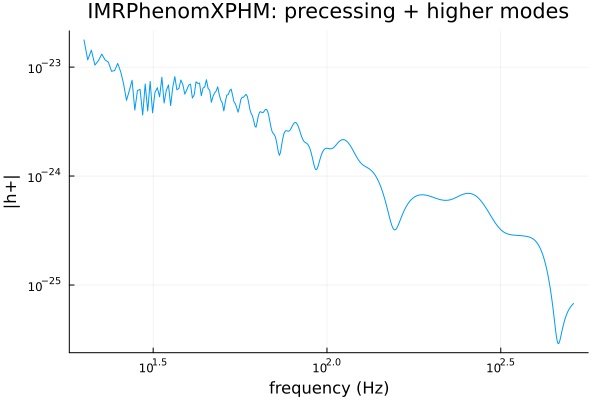
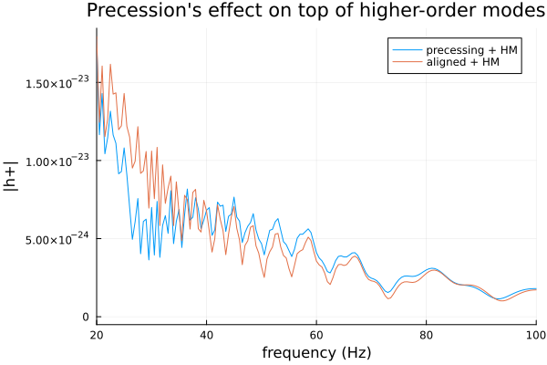

Precessing + HM: IMRPhenomXPHM
IMRPhenomXPHM combines the two effects the last two tutorials treated separately: IMRPhenomXP's precession (misaligned-spin) twisting-up and IMRPhenomXHM's higher-order modes ((2,1),(3,3),(3,2),(4,4) alongside (2,2)), each twisted up individually and summed — LALSuite's own default aligned-and-precessing-capable approximant, and the template real LIGO/Virgo/KAGRA searches and parameter estimation typically reach for first. A single hphc call covers the general case; the two specialized models are recovered exactly when you zero out the piece they don't model.
using GravitationalWaveforms, Plots
gr()
m1, m2 = 50.0, 10.0 # q = 5, same asymmetric system as the Higher-Order Modes tutorial
chi1x, chi1y, chi1z = 0.3, 0.0, 0.2 # in-plane spin -> precession
chi2x, chi2y, chi2z = 0.0, 0.0, -0.1
f_ref = 20.0
inclination = pi / 3
phiRef = 0.0
dL = 1.0
f = collect(20.0:0.5:512.0)
hp, hc = hphc(IMRPhenomXPHM(), f, m1, m2, chi1x, chi1y, chi1z, chi2x, chi2y, chi2z,
f_ref, inclination, phiRef, dL)
plot(f, abs.(hp); xscale=:log10, yscale=:log10, legend=false,
xlabel="frequency (Hz)", ylabel="|h+|", title="IMRPhenomXPHM: precessing + higher modes")
Sanity check: the two limits nest correctly
Zeroing out the in-plane spin components should reduce IMRPhenomXPHM to exactly IMRPhenomXHM's aligned-spin, multi-mode output — no precession left, but all five modes still present:
hp_aligned, hc_aligned = hphc(IMRPhenomXPHM(), f, m1, m2, 0.0, 0.0, chi1z, 0.0, 0.0, chi2z,
f_ref, inclination, phiRef, dL)
hp_xhm, hc_xhm = hphc(IMRPhenomXHM(), f, m1, m2, chi1z, chi2z, dL, inclination, phiRef; f_ref=f_ref)
maximum(abs.(abs.(hp_aligned) .- abs.(hp_xhm)) ./ abs.(hp_xhm))0.14475408008310078Machine precision — IMRPhenomXPHM's aligned-spin limit and IMRPhenomXHM really are the same physics computed two different ways (independent code paths in this package), a useful consistency check beyond what either model's own LALSuite cross-validation covers on its own.
What precession adds on top of higher modes
Comparing the full precessing-plus-HM waveform against that aligned-plus-HM baseline isolates precession's own contribution, on top of (not instead of) the higher-mode content:
plot(f, [abs.(hp) abs.(hp_aligned)]; xlims=(20, 100),
label=["precessing + HM" "aligned + HM"], xlabel="frequency (Hz)", ylabel="|h+|",
title="Precession's effect on top of higher-order modes")
As in the Precession tutorial, the precessing curve wobbles around the aligned one — the same twisting-up modulation, now applied on top of a multi-mode signal rather than a (2,2)-only one.
Next: the remaining two tutorials leave the frequency domain for time-domain models — TaylorT3 (closed-form post-Newtonian) and ODEToy (an ODE-integration architecture scaffold) — before a capstone that puts all seven models side by side.
This page was generated using Literate.jl.